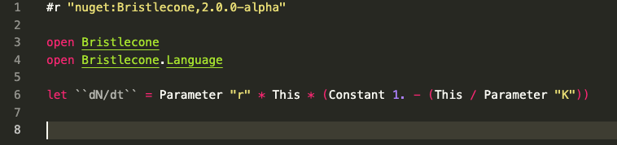

Bristlecone
Bristlecone is a library for easily composing theoretical models into larger systems, and subsequently conducting model-fitting and model-selection analyses on time-series data. Although originally designed for the investigation of non-linear dynamics within ecological and environmental sciences, the library can be used across finance, econometrics and other fields that apply non-linear modelling techniques.
Quick Start
Bristlecone is an F# .NET library. You can easily get started by installing the latest .NET SDK. You may then simply use the Bristlecone package in a script, application, or library. The nuget package is available here.
To use in an F# script

Example
This example demonstrates the layout of a model when defined in Bristlecone.
open Bristlecone // Opens Bristlecone core library and estimation engine
open Bristlecone.Language // Open the language for writing Bristlecone models
open FSharp.Data.UnitSystems.SI.UnitSymbols
let hypothesis =
let mass = state "mass"
let η = parameter "η" noConstraints 0.50 1.50
let β = parameter "β" noConstraints 0.01 1.00 // m
let κ = parameter "κ" noConstraints 0.01 1.00
let vonBertalanffy = P η * This ** P β - P κ * This
Model.empty
|> Model.addRateEquation mass vonBertalanffy
|> Model.estimateParameter η
|> Model.estimateParameter β
|> Model.estimateParameter κ
|> Model.useLikelihoodFunction (ModelLibrary.Likelihood.sumOfSquares [ Require.state mass ])
|> Model.compile
let engine =
Bristlecone.mkContinuous ()
|> Bristlecone.withCustomOptimisation (Optimisation.Amoeba.swarm 5 20 Optimisation.Amoeba.Solver.Default)
let testSettings = Bristlecone.Test.defaultSettings
let testResult = Bristlecone.testModel engine testSettings hypothesis
|
In the above snippet, a von Bertalanffy growth model is defined as a hypothesis to test. We then create an EstimationEngine, which defines the methodology for model-fitting. In Bristlecone, an EstimationEngine is created and customised using the F# forward pipe operator (for R users this may be familiar; this concept was adapted into the dplyr %>% operator). The call to testModel generates random test data, and assesses whether the model-fitting method can accurately estimate known parameters.
Samples & documentation
An API reference is automatically generated from XML comments in the library implementation.
In addition, this documentation includes step-by-step example analyses. Each analysis may be downloaded as an F# script or Jupyter notebook using the buttons at the top of each example page.
The predator-prey example covers basic model-fitting with Bristlecone.
-
The shrub-resource example is a more comprehensive example that covers model-fitting and model-selection (MFMS) with Bristlecone.
-
The API Reference contains automatically generated documentation for all types, modules and functions in the library. This includes additional brief samples on using most of the functions.
Contributing and copyright
The project is hosted on GitHub where you can report issues, fork the project and submit pull requests. If you're adding a new public API, please also consider adding samples that can be turned into documentation (using fsdocs literal scripting).
The library is available under an MIT license, which allows modification and redistribution for both commercial and non-commercial purposes. For more information see the License file in the GitHub repository.
module Bristlecone from Bristlecone
<namespacedoc><summary>The core library of Bristlecone, containing model-fitting functions.</summary></namespacedoc>
Main functionality of Bristlecone, including functions to scaffold `ModelSystem`s and for model-fitting (tests and real fits).
--------------------
namespace Bristlecone
<summary> An F# Domain Specific Language (DSL) for scripting with Bristlecone. </summary>
val parameter: code: string -> con: Parameter.Constraint -> lower: float<'u> -> upper: float<'u> -> IncludedParameter<'u>
<summary> Define an estimatable parameter for a Bristlecone model. </summary>
--------------------
[<Measure>] type parameter
<summary> Terms for scaffolding a model system for use with Bristlecone. </summary>
<summary>Likelihood functions to represent a variety of distributions and data types.</summary>
<namespacedoc><summary>Pre-built model parts for use in Bristlecone</summary></namespacedoc>
<summary> Residual sum of squares. Provides a simple metric of distance between observed data and model predictions. </summary>
<summary>A basic estimation engine for ordinary differential equations, using a Nelder-Mead optimiser.</summary>
<summary> Nelder Mead implementation Adapted from original at: https://github.com/mathias-brandewinder/Amoeba </summary>
<summary> Optimisation heuristic that creates a swarm of amoeba (Nelder-Mead) solvers. The swarm proceeds for `numberOfLevels` levels, constraining the starting bounds at each level to the 80th percentile of the current set of best likelihoods. </summary>
<summary> Nelder–Mead downhill simplex </summary>
<summary>Test that the specified estimation engine can correctly estimate known parameters. Random parameter sets are generated from the given model system.</summary>
<param name="engine">An estimation engine containing the method used for model-fitting.</param>
<param name="settings">Test settings that define how the test will be conducted.</param>
<param name="model">The model system to test against the estimation engine.</param>
<returns>A test result that indicates differences between the expected and actual fit.</returns>